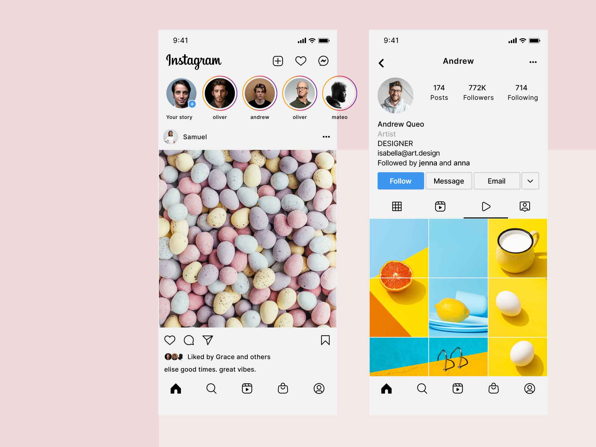
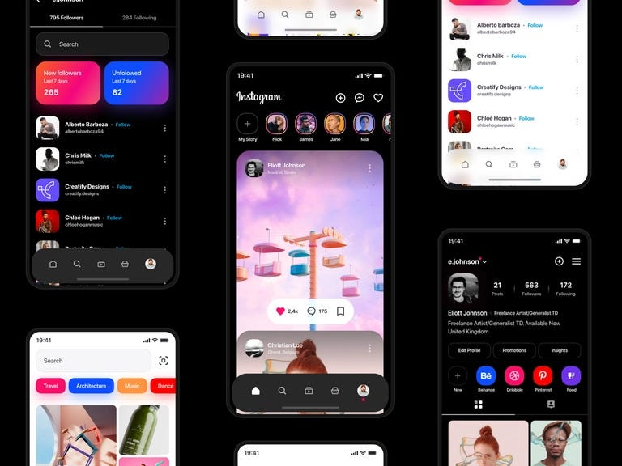

🎓 Video Ucapan Selamat Wisuda
💡 Studi Kasus: Instagram

User Interface (UI)
Desain minimalis yang bersih, menjadikan konten foto sebagai 'raja'.
Baca Detail
User Experience (UX)
Pengalaman pengguna berbasis gestur (Double Tap & Scroll) yang intuitif.
Baca Detail

Detail Startup & Filosofi
Transformasi dari aplikasi rumit menjadi raksasa visual storytelling.
Baca Detail📱 Terhubung dengan Kami
 Follow @jerichof_
Follow @jerichof_